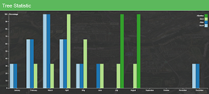
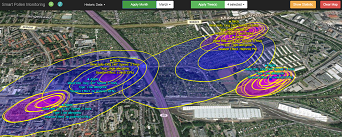

Basic Info
Step.1 The element
 or
or
 you find on the top bar allows you to choose between
recent and
historic data.
you find on the top bar allows you to choose between
recent and
historic data.
Step.2 On the next element, If you select historic data on step 1, you will be able to choose also the specific
month. Please, make selection of a month and confirm the selection with the green button.
Then, please make selection of tree types you are interested to and confirm the selection with the green button.
Step.3 Then, the pollen statistical information window will pop up.

It describes all the pollen dispersals for each month. You can click somewhere on the map area to close this
window. The statistic window can always be called back with the yellow "Show statistic" button
Step.4 Then, every time you click on the map, the view will be zoomed in and the analyzed pollen dispersal
area of your selection will be loaded.

Add Tree
You can help expanding the application database by adding more trees. To do this, click on the
 button.
button.
A pop-up window will be opened and allows you to add a tree information. To get the coordinates, you can just
click at the specific point in the map.
Clear Map
A click on
 will clear the map and your previous selection. You have to apply new selection to display pollen analysis again.
will clear the map and your previous selection. You have to apply new selection to display pollen analysis again.
Statistic
The Statistic will automatically display after the tree selection, or when you click this button. The Statistic shows you in which month your selected Trees are blooming.